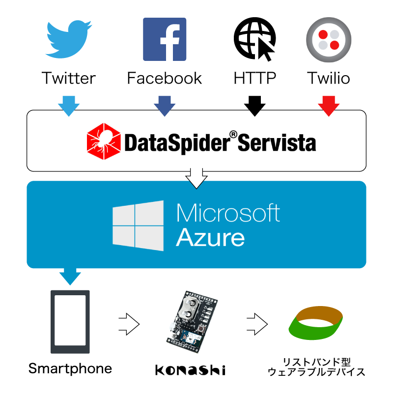

朝が弱い、低血圧、寝不足、様々な理由で遅刻してしまいますよね。
3分おきになる携帯のアラーム。
アラームを止めた記憶はないのに止まっている。
1時間の仮眠のつもりが起きたら5時間経っていた。
瞬きをしたら朝だった。
こんなことにならないようにするシステムを提案します。
使い方は通常のアラームと変わりません。いつも通り時間を設定し、寝るだけです。
起き方が違います。手につけているウェアラブルデバイスにスマホから通知、そしてそのデバイスから電気が流れます。
びりびり、と。
とても、気持ち悪い、違和感、不愉快、そして痛い。
しかし目は覚めることでしょう。
だがしかし、二度寝、三度寝としてしまうのが真のMr.社長出勤。
自分で設定したアラームだけでは起きれないことも、また寝落ちなどしてしまうこともあるでしょう。
そこで、FaceBook,Twitter,HTTP,それから電話、様々なデータをDataSpiderでクローリングし、複数人がその人を起こそうとしていたら、設定していなくとも起こします。
遅刻をする人も自分でもそれなりに対策はします。それなりに。
周りの人で、遅刻しないように手助けをしてあげましょう。
